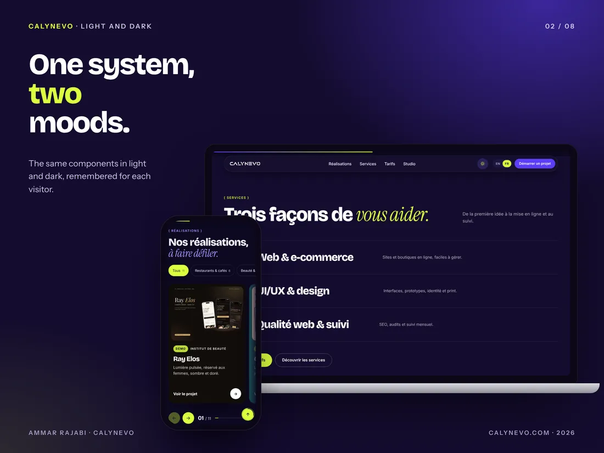
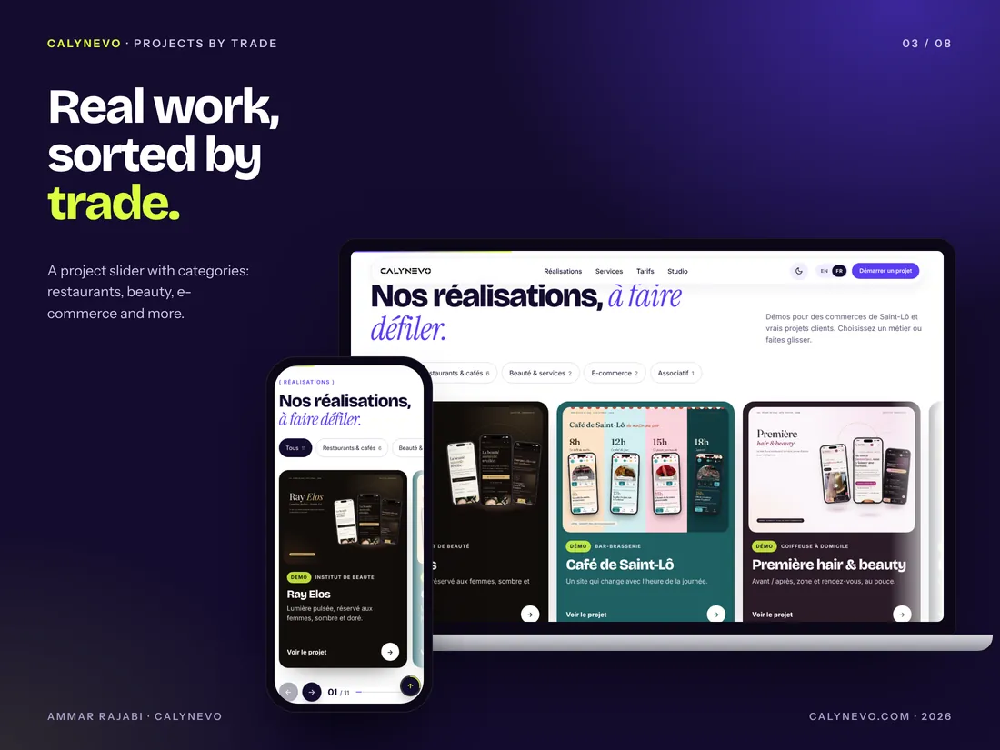
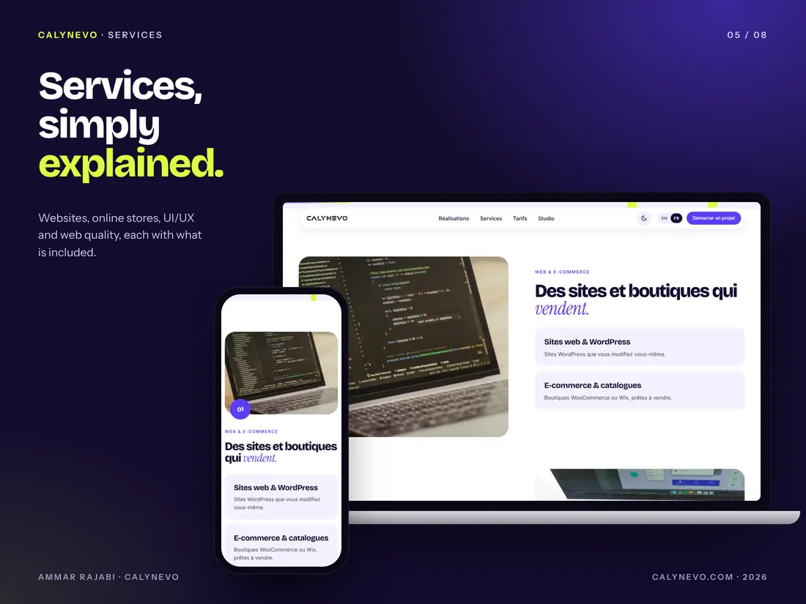
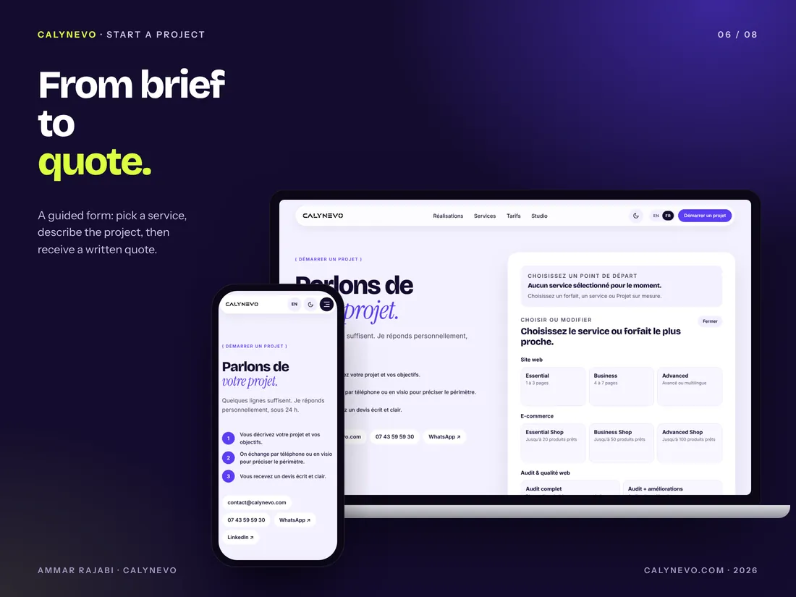
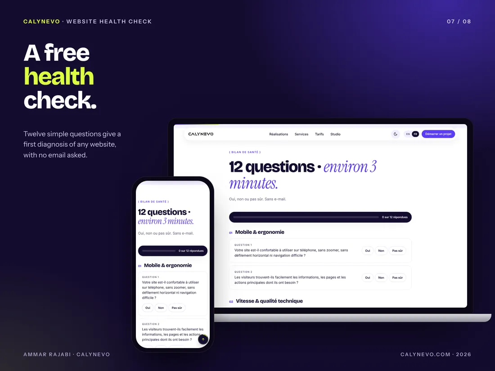
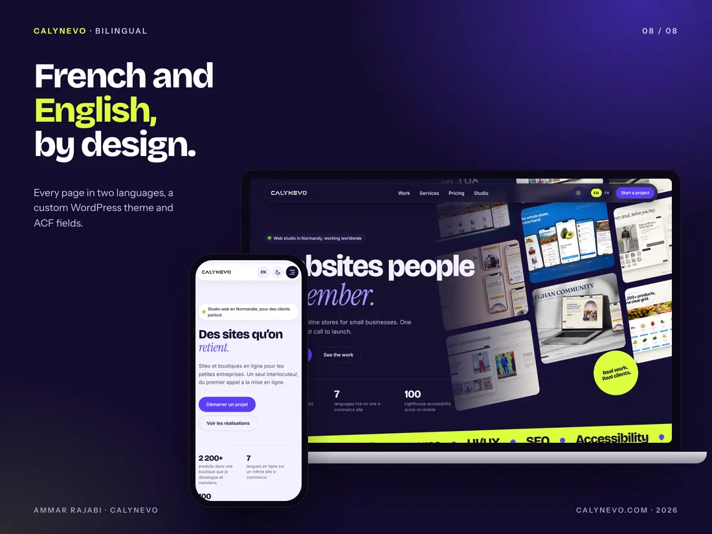

CALYNEVO
My independent digital studio, founded in Saint-Lô for companies that need a WordPress website, an online store or a clear interface.

Why a separate studio
This portfolio presents my journey and my profile. CALYNEVO presents my services to businesses, with its own prices, contacts and terms. My main goal is still a junior role; the studio also lets me accept focused web projects.
The new version, October 2026
- A new violet and lime identity, in light and dark mode.
- Projects sorted by trade, with nine demos and their case studies.
- A “Start a project” form and a free 12-question website health check.
- The same custom classic WordPress theme, in French and English.
I defined the structure, the design and the content, and I check every version. The code was built with the help of AI tools, then reviewed and tested by hand.
My studio
Three areas.
From the first need to launch, then ongoing support.
Web and e-commerce
Professional websites, WordPress, online stores and catalogues.
UI/UX and design
Interfaces, prototypes, visual identity and digital assets.
Web quality and support
SEO, accessibility, performance, audits and maintenance.
The studio website, in pictures
A case study of the new calynevo.com: identity, projects, services, project request, website check and bilingual content. All screens are real captures.
01 / 04
Identity and modes
A sharper identity: deep violet, lime and strong type. The same system works in light and dark.

Light and dark The same components in light and dark mode, with the visitor’s choice remembered.
02 / 04
Projects and demos
Projects are sorted by trade, so a business owner quickly finds an example close to their own.

Projects by trade A project slider with categories: restaurants, beauty, e-commerce and more.

Nine demos Nine demos for Saint-Lô businesses, each with its own case study, mockups and a live link.
03 / 04
Services and project request
Each service explains what is included, then a guided form helps prepare the request.

Services Websites, online stores, UI/UX and web quality, with what is included in each offer.

Start a project Pick a service, describe the project, then receive a clear written quote.
04 / 04
Website check and bilingual
Useful tools before the first contact, on a site fully in French and English.
I check every version with Lighthouse and WAVE before it goes live: performance, accessibility, best practices and SEO.

Free website check Twelve simple questions give a first diagnosis of any website, with no email asked.

French and English Every page exists in two languages, with a custom WordPress theme and ACF fields.
Featured projects
The studio shows 12 projects: 3 real projects and 9 demos for Saint-Lô businesses. Their full case studies are here.
Real projects
- Pamir-Lux →Real project
- Afghan Community →Real project
- DressYourBody →Real project
Demos
- Le Central →Concept demo
- Ray Elos →Presented demo
- Première hair & beauty →Concept demo
- Le 7ème Art →Concept demo
- Les Remparts →Concept demo
- La Broche Gourmande →Concept demo
- Le Bel Canto →Concept demo
- Royal Kebab →Concept demo
- Café de Saint-Lô →Concept demo
Contact
A role, a project or a simple question?
I reply in English or French, usually within 48 hours.